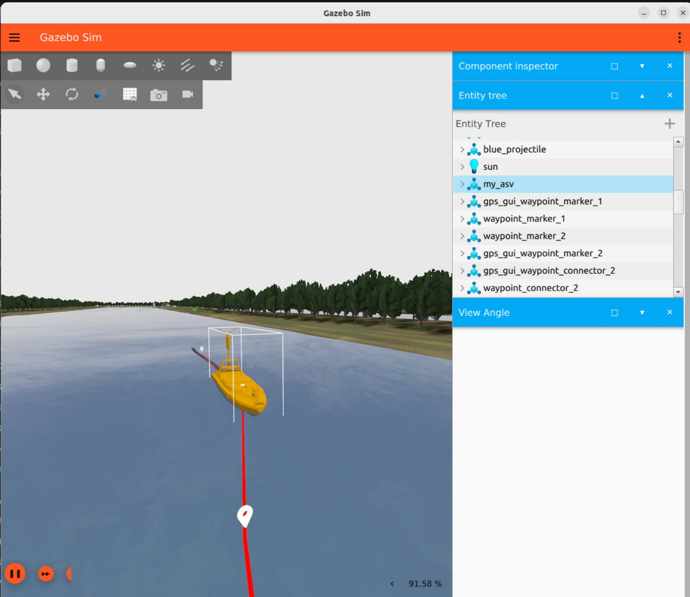
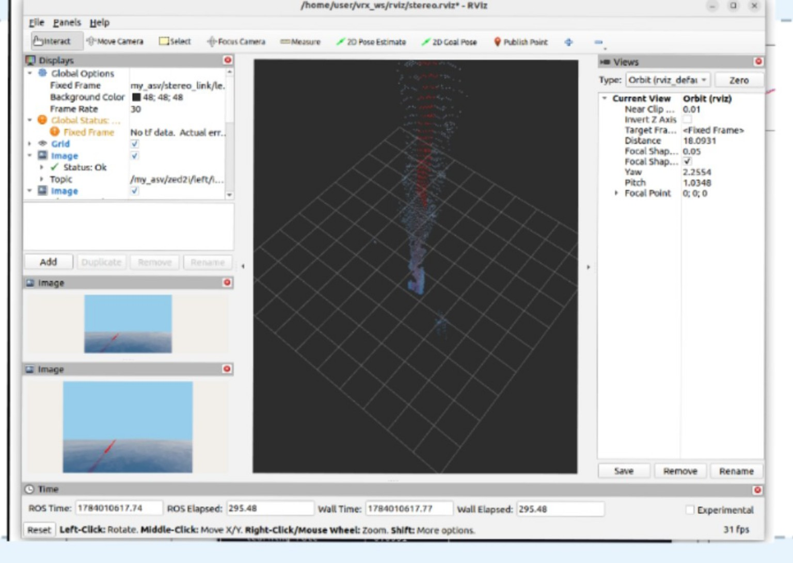

National Institute of Technology, Tiruchirappalli
B.Tech — Instrumentation & Control Engineering
ROBOTICS · AUTONOMOUS SYSTEMS · PHYSICAL AI
I’m a final-year Instrumentation & Control Engineering student at NIT Tiruchirappalli, interested in how machines sense, understand, decide, act and learn through feedback.
My work explores that loop through robotics, guidance, navigation & control, autonomous navigation, computer vision and reinforcement learning.
I build intelligence that interacts with the physical world.
01 / ABOUT

What began with instrumentation and control gradually became a broader interest in the loop between sensing, decision-making, action and feedback — how a system observes what is happening, decides what to do, acts, and uses the result to make its next decision better.
That curiosity has taken me from sensors, electronics and control systems into computer vision, robotics and reinforcement learning. I’m especially drawn to problems where intelligence has to leave the computer and interact with something physical — a robot, a vehicle, a sensor, or a changing environment.
I like understanding systems from the ground up: what is being measured, what the signal actually means, how the system responds, and where learning can make that response more adaptive.
I’m still exploring where that intersection of control, robotics and learning takes me — and building things is how I like to figure it out.
02 / EDUCATION
B.Tech — Instrumentation & Control Engineering
03 / EXPERIENCE
SEACONVOY SYSTEMS ENGINEERING PVT. LTD. · CHENNAI · MAY–JULY 2026
Worked with Seaconvoy’s NAVIS Autonomous Surface Vehicle in ROS 2 and Gazebo/VRX. My work progressed from configuring and validating the existing vessel model to autonomous navigation and reinforcement-learning capabilities.
Both SAC and TD3 achieved 10/10 successful nominal path-following trials, with SAC achieving lower mean cross-track error.


04 / SELECTED PROJECTS
IN DEVELOPMENT · UAV AUTONOMY / ADAS-RELEVANT STACK
GeoNav-AI combines semantic environmental understanding with an autonomous UAV navigation stack built on ROS 2 and PX4. A U-Net with a ResNet-34 encoder, developed using OpenEarthMap aerial imagery, performs nine-class pixel-wise terrain segmentation. The semantic map is used to identify and score safer landing regions based on terrain class, semantic confidence and spatial clearance.
The selected landing region becomes a ROS 2 navigation goal and enters an autonomy pipeline integrating LiDAR perception, occupancy mapping, EKF-based state estimation, A* path planning and PX4 closed-loop mission execution.
The perception → state estimation → environment representation → planning → control architecture reflects core building blocks shared with autonomous-vehicle and ADAS stacks, implemented here on a UAV simulation platform.
FACULTY-GUIDED PROJECT · NIT TIRUCHIRAPPALLI · JULY–NOVEMBER 2024
Developed a dual-stage YOLOv11 computer-vision pipeline for bare-PCB fabrication and populated-PCB assembly defects.
Evaluation used 1,698 images across 10 defect classes, with ONNX inference work and Azure IoT Hub telemetry / corrective-action mapping.


FACULTY-GUIDED PROJECT · NIT TIRUCHIRAPPALLI · AUGUST–NOVEMBER 2025
Developed an ESP32-S3 battery monitoring and safety architecture using voltage, current and temperature sensing with local finite-state-machine fault logic.
Actual battery thermal runaway was not intentionally induced.


05 / RESEARCH
UNDER REVIEW — IEEE ICRA 2027 · EXTENDED RESEARCH IN PROGRESS
Research extending my ASV work toward safe reinforcement-learning-based autonomous navigation in multi-vessel environments, combining recurrent policies with predictive safety intervention and progress-aware action selection.
The submitted evaluation includes comparisons against nominal recurrent PPO and classical LOS + CPA/TCPA navigation, together with component ablations. Current results are simulation-validated.
06 / ENGINEERING FOUNDATION
Control Systems · Process Control · Signals & Systems · Digital Signal Processing · P&ID
Sensors & Transducers · Industrial · Analytical · Optical · Biomedical Instrumentation · Electrical & Electronic Measurement
Circuit Theory · Analog · Digital · Microprocessors · Microcontrollers · Embedded Systems
Robotics · Linear Algebra · Coordinate Transformations · Kinematics · State Estimation
PLC · SCADA · DCS
MATLAB · SPICE / LTspice · COMSOL · Linux · Git
07 / CERTIFICATIONS
Elite · 91% · Jan–Apr 2026
08 / TECHNICAL SKILLS
ROS 2 · Gazebo · RViz2 · PX4 · SLAM · Autonomous Navigation · Waypoint Planning · Path Following · Collision Avoidance · Trajectory Tracking
PyTorch · Stable-Baselines3 · SB3-Contrib · Gymnasium · PPO · Recurrent PPO · LSTM · SAC · TD3 · YOLO · OpenCV · ONNX
LiDAR · Stereo / Depth Vision · IMU · GNSS / GPS · LaserScan · PointCloud2 · Sensor Fusion · EKF · Coordinate Transformations · Semantic Segmentation
LOS Guidance · PID / PD · Nomoto Dynamics · Cross-Track Error · CPA / TCPA · Predictive Safety Filtering · COLREGS-Aware Navigation
ESP32 · Raspberry Pi · MSP430 · ARM · MQTT · Arduino IoT · Azure IoT
PLC · SCADA · DCS
Python · C · C++ · NumPy · Jupyter · MATLAB · Linux / Ubuntu · Git / GitHub · CMake · colcon · ROS 2 CLI · LTspice / SPICE · COMSOL
09 / CONTACT
I’m interested in opportunities and conversations around robotics, autonomous systems, reinforcement learning and Physical AI.
Padma Muthu LakshmananFinal-Year B.Tech · Instrumentation & Control Engineering
National Institute of Technology, Tiruchirappalli